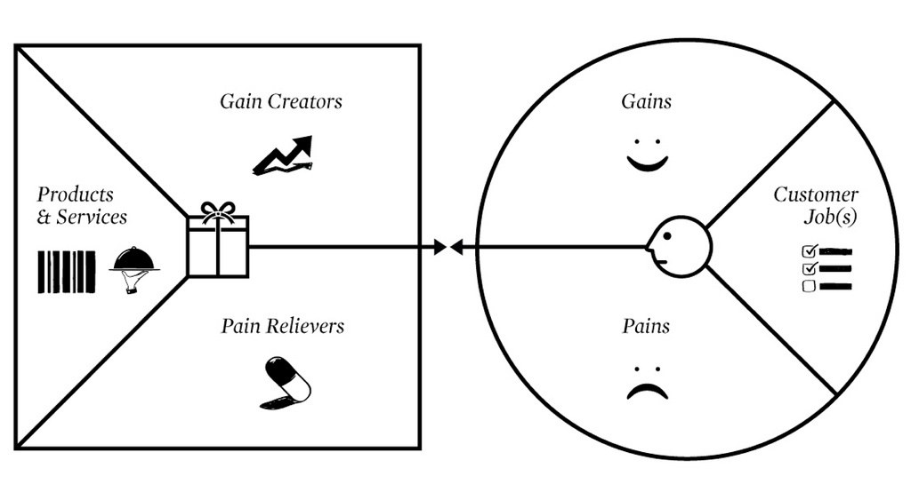

Bij het vak Smart Business wordt door middel workshops een inkijk gegeven op de bedrijfskundige kant van bedrijven die zich al dan niet bezig houden met Industrie 4.0. In de eerste les is er gekeken naar wat je als student wilt komen halen tijdens de minor om sturing te geven aan je eigen leerproces door zelf activiteiten in gang te zetten. De overige lessen van Smart Business stonden in het teken van workshops waarbij verschillende bedrijfskundige concepten naar voren zijn gekomen. De volgende concepten en modellen zijn aan bod gekomen tijdens de Business lessen: Lean Six Sigma, de Agile methode, de Scrum methodiek, Design Thinking en het Business Model Canvas. In de onderstaande tabbladen zijn alle opdrachten die ik heb gemaakt voor ieder Smart Business onderdeel terug te vinden.
De eerste les van Smart Business stond in het teken van elkaar beter leren kennen en een inzicht krijgen in het doel waarmee mensen zich hebben ingeschreven voor de minor Smart Industry. In dit onderdeel ga ik dan ook dieper in op wat ik te bieden heb en kom halen tijdens deze minor. Dit wordt gedaan aan de hand van het zogenaamde Value Proposition Canvas, wat in de onderstaande figuur te zien is.
Het Value Propostion Canvas (VPC) gaat dieper in op de twee onderdelen van het welbekende Business Model Canvas:
Value proposition: de value proposition beschrijft de waarde die het product (in dit geval de minor Smart Industry) op gaat leveren voor de klant (in dit geval de student). De value proposition bestaat uit 3 onderdelen:- Products & Services: de vraag die bij dit onderdeel hoort is "Hoe ziet jou ideale minor eruit?" De minor Smart Industry is in dit model het product wat wordt aangeboden. Mijn ideale minor is een minor waarin ik mijn bedrijfskundige kennis kan overdragen aan medestudenten en ook kan toepassen in een technische context voor het onderdeel Smart Project. Daarnaast zou ik ook graag willen ontdekken welke technische vakgebieden mij het meest aanspreken om daar wellicht in master te gaan volgen na mijn HBO-opleiding Bedrijfskunde.
- Gain Creators: de vraag die bij dit onderdeel hoort is "Welke persoonlijke activa kun je inzetten?". De persoonlijke activa die ik tijdens de minor kan inzetten is mijn kennis en ervaring op het gebied van verandermanagement, kwaliteitsmanagement en projectmanagement. Daarnaast ben ik ook communicatief sterk, wat ik kan gebruiken voor het onderdeel Smart Project en de intervisies die staan gepland.
- Pain relievers: de vraag die hier bij hoort is: "Wat heb je nodig om de barrières weg te nemen?". Wat ik nodig heb om mijn kennisgebrek op technisch gebied te vergroten, is het bijwonen van de workshops van Smart Connection, Smart Technology en Smart Business. Daarnaast moet ik ook een actieve en leergierige houding aannemen om kennis en vaardigheden sneller tot mij te nemen en toe te kunnen passen binnen het project.
Personal Profile: aangezien het product de minor smart industry is bestaat de klantengroep uit de groep studenten. Net als de value proposition bestaat het customer profile uit 3 onderdelen: - Customer jobs: de customer jobs beschrijft wat het product (in dit geval de minor) moet bieden aan de klant (oftewel student). Wat ik graag tijdens deze minor zou willen leren is hoe ik beter kan leren inspelen op de technische kant van het bedrijfsleven om hier later profijt van te hebben in mijn carrière en voor Smart Project.
- Pains: bijbehorende vraag: "Welke dingen kunnen succes in de weg staan?": de zaken die succes in de weg kunnen staan is het op afstand werken door de coronacrises en door het kennisgebrek dat ik heb op technisch gebied het project niet succesvol kan afronden.
- Customer gains: de bijbehorende vraag bij dit onderdeel luidt als volgt: "Hoe definieer je succes?". Wat ik na deze minor zou willen hebben bereikt is de basis facetten van de techniek onder de knie krijgen en succesvol kunnen toepassen voor de beroepsproducten van Smart Technology en Smart Project.
De tweede les van Smart Business heeft de heer Geert Rensen een gastcollege gehouden die in het teken stond van het oplossen van een casus voor het verzekeringsbedrijf Axa. Ik heb voor deze opdracht samengewerkt met mede-smarties Lucas, Mees, Patrick, Mika en Thomas. De casus waarin is gedoken is als volgt:
Turks dochterbedrijf van een internationale verzekeraar. De verzekeraar biedt een breed pallet aan verzekeringen: bijv. levens-, schade-, inkomens- en pensioenverzekeringen
De concurrentie op de markt is zeer sterk, waardoor WA (MTPL) verzekeringen verliesgevend geworden voor deze verzekeraar. De verzekeraar wil graag actief blijven in deze markt (auto verzekeringen), omdat deze verzekeringen een basis vormen voor andere verzekeringen.
Het bedrijf verkoopt zijn polissen via een agentennetwerk en heeft dus geen rechtstreeks contact met haar klanten.
Na de introductie op de casus kregen we de opdracht om het huidige Business Model Canvas uit te werken. Het BMC is een model wat gebruikt wordt om het bedrijfsmodel van een organisatie in kaart te brengen. Het model bestaat uit 4 hoofdcomponenten die verder zijn onderverdeeld in 9 bouwstenen. In de onderstaande afbeeldingen is te zien hoe ik samen met medestudenten aan de gang ben gegaan met het uitwerken van het huidige Business Model Canvas van Axa.
In de onderstaande bullet points zijn de 9 bouwstennen van het nieuwe BMC voor Axa uitgewerkt.
- Key partners: in deze bouwsteen worden de partners van een organisatie weergegeven. In het geval van deze verzekeraar zijn de partners de verkoopagenten, herstelbedrijven/autogarages, de overheid, software leveranciers, hardware leveranciers en de verzekeringsnemers.
- Kernactiviteiten: hier worden de activiteiten beschreven die het voor de klant aantrekkelijk maakt om klant te zijn. De grootste key activity is het uitbetalen van schadeclaims, maar ook de ondersteunende processen als service en bereikbaarheid voor vragen van klanten spelen een rol in de key activities.
- Key resources: hier wordt beschreven welke middelen je nodig hebt om de waardepropositie te realiseren. Voor de verzekeraar is dat vooral geld wat uitgekeerd kan worden bij schadeclaims. Verder kunnen de lokale agenten een functie hebben als netwerk en kennis connectie binnen een dorp of wijk.
- Cost structure: in de cost structure wordt zichtbaar welke kostenposten de meeste impact hebben op het bedrijf. Dit zijn bijvoorbeeld de schadeclaims, commissies voor de agenten, salarissen van medewerkers, huurkosten van de panden en kosten voor de ICT.
- Value Proposition: op welke manier geeft de service van het bedrijf waarde voor de klant? Er wordt gekeken naar de waarde voor de klanten en het probleem wat voor klanten wordt opgelost. Voor verzekeraars is dit voornamelijk het wegnemen van zorgen bij de klanten. Het risico wat klanten hebben op hoge kosten door autoschade wordt door de verzekeraar weggenomen tegen een maandelijkse betaling. Kernwoorden die hier een rol bij spelen zijn maatwer, zekerheid en veiligheid.
- Customer Relationship: wat voor relatie heeft het bedrijf met de klant en hoe wordt deze relatie onderhouden? Hierbij wordt ook gekeken naar de verwachtingen vanuit de klant. Als klant kom je zelden in contact met de verzekeraar, alleen als er schade is wordt de verzekeraar opgezocht. Hierom is het voor beide partijen gewenst om het contact tot een minimum te beperken. Klanten en Axa zouden via lokale agents de juist service kunnen ontvangen, maar het kan uiteraard ook online of telefonisch worden geregeld.
- Customer Segments: hier wordt gekeken naar wie de (potentiële) klanten zijn. In deze casus zijn dat de Turkse automobilisten en bedrijven die over de auto's beschikken.
- Channels: hoe bereikt de waardepropositie je klanten? Hoe wordt er gecommuniceerd met de klant? De particuliere en kleine zakelijke klanten van de verzekeraar communiceren uitsluitend via een lokale agent. Deze agent is voor zowel de klant als voor de overkoepelende verzekeraar het aanspreekpunt en de schakel tussen beide partijen. Voor grote zakelijke klanten wordt hoogstwaarschijnlijk de stap van de agent overgeslagen en direct met de verzekeraar gecommuniceerd.
- Revenue Streams: Hoe komt er geld binnen? Er wordt gekeken naar hoe er betaald wordt, waar er voor betaald wordt en voor welke meerwaarde de klanten geld betalen. Voor deze verzekeraar komen de inkomsten uit de premies die de klanten betalen en uit beleggingen met een positief rendement.
De veranderaanpak voor Axa
Door veranderingen aan te brengen in het BMC Model Canvas Axa heb ik vervolgens een mogelijke oplossing kunnen bedenken voor het probleem. Het idee was om een app te ontwikkelen die men helpt als er een schade wordt doorgeven door klanten.
Met de vraag hoe het probleem efficiënt verholpen kan worden en wat het allemaal met zich mee brengt. Deze app zal ervoor zorgen dat klanten hun vragen daar alvast kunnen stellen en informatie kunnen verzamelen over wat er al gebeurt is en wat de locatie van de klant is. Voordat een slepersbedrijf op tijd aanwezig kan zijn, kan dit vaak onnodige tijd kosten. Door technologische ontwikkelingen kan men als klant via deze app foto’s delen van de opgelopen schade. Doordat foto’s direct gedeeld kunnen worden met het bedrijf, zal fraude zeer beperkt blijven. De opgenomen schade is namelijk al vastgelegd in de app en zicht voor Axa. Hieronder zijn de zes stappen kort toegelicht.
1. Ik wil graag een schade doorgeven.
2. Wat zijn uw adresgegevens?
3. De adresgegevens zijn ontvangen.
4. Onze slepersdienst is onderweg.
5. Upload hier een foto van uw schade.
6. Dank, onze medewerker zal direct contact met u opnemen.
Mocht Axa bereidt zijn om deze app in de praktijkt te implementeren, dan kunnen er wellicht kansen ontstaan voor een nieuwe verdienmodel, namelijk: het verkopen van data aan derden. Steeds meer bedrijven hebben profijt bij deze data en zijn steeds vaker bereidt om hiervoor te betalen.
Oplossingen voor AXA n.a.v. creatieve sessie
Hoe kunnen verzekeraars door middel van IoT hun kosten verlagen?
Door duidelijk en gemakkelijk contact te leggen met klanten kunnen verzekeraars eenvoudiger producten verkopen aan klanten. Denk hierbij bijvoorbeeld aan producten verkopen via apps.
Door gebruik te maken van IoT word de organisatie efficiënter en zullen de middelen beter geoptimaliseerd kunnen worden en neemt de gebruiksvriendelijkheid voor klanten toe. Ook kan er gebruikt worden gemaakt van automatische sensoren en checks die fraude kunnen herkennen. Deze sensoren en checks hebben als doel om frauduleuze aanvragen automatisch te identificeren en te melden.
Verder kunnen klanten door het gebruik van IoT zelf beter hun huis of gezondheid in de gaten houden, waardoor ziektes eerder herkend kunnen worden en de kosten van de behandeling lager uit zullen vallen. Daarnaast is het een voordeel dat je live je bewakingscamera thuis kan volgen terwijl je zelf niet thuis aanwezig bent. Hierdoor kun je van een afstand kijken of er iets gebeurd (bijvoorbeeld bij een inbraak of verdachte mensen rond je huis).
Hoe kunnen verzekeraars aanvullende business generen door middel van IoT?
Door gebruik te maken van het IoT kunnen verzekeraars gemakkelijker aan digital networking doen. De verzekeraars zijn hierdoor in staat om makkelijker met bedrijven in contact te komen en nieuwe producten te verwezenlijken voor deze bedrijven.
Door daadwerkelijk gebruik te kunnen maken van de volledige data die verzekeraars hebben van hun klanten kan onderzocht worden naar welke diensten of producten klanten behoeften aan hebben. Ook kan de data gebruikt worden om beter te kunnen bepalen hoe hoog de premies moeten zijn voor de klanten. Hierbij kan men denken aan bijvoorbeeld autoverzekeringen.
Wat is de oplossing en hoe kan dit worden bereikt?
De volgende oplossingen zijn op basis van het veranderplan opgesteld:
Direct klantcontact
Maatwerk door middel van Data-Driven Decision Making
Agentschap op korte termijn uitfaseren
Data gebruiken om beter in contact te zijn met de klanten
Minder verspilling (Lean-principes) en efficiënter werken.
Implementatie van de oplossingen kan als volgt worden gerealiseerd:
Data inkopen
Data van klanten intern oplossen
Data gebruiken om op een gedrag in te kunnen spelen
Melding om mensen te sturen( klantopvoeding)
Tot slot is het belangrijk om goed gedrag te belonen.
Voor dit onderdeel heeft Paul Kalis, COO van Qander zijn ervaringen gedeeld ten aanzien van organisatie transities; het samenwerken in de keten en het beïnvloeden van stakeholders. Tijdens deze workshop hebben we van Paul Kanis de opdracht gekregen om het BMC en waarde aanbod van onze projectorganisatie te beschrijven. Hieronder worden de vragen die horen bij het TOM3 model nader toegelicht. Het eerste vraag luidt: "Wat beoogt de projectorganisatie te willen bereiken met de innovatie?" Het lectoraat Smart Business heeft tot doel een toekomstbestendig MKB te ontwikkelen, via praktijkgericht onderzoek met partners uit het werkveld en het onderwijs.
Doelstellingen
De praktijkdoelstelling is het gebruik maken van een digitale maturity scan zodat organisaties weten waar ze staan qua ontwikkeling om met Smart Technology het businessmodel te verbeteren ofwel te vernieuwen. Het projectdoel is een ontwerp (liefst een prototype) van een smart AMBISI maturity scan door onderzoek te doen naar bruikbare game development software.
Waarde aanbod
De tweede vraagt luidt als volgt: "Hoe verandert het waarde aanbod"? De waarde bod verandert voornamelijk door het gebruik van de maturity scan, zodat het lectoraat weet waar kennisontwikkeling nodig is om MKB organisatie versneld volwassen te laten worden met betrekking tot inzet van Smart Technologie.
Impact op organisatie
Bij de volgende vraag is het belangrijk om duidelijk te maken wat er als gevolg van de innovatie wijzigt in het Business Model Canvas van het lectoraat. Door gebruik te maken van de maturity scan zal dit ervoor zorgen dat het lectoraat precies weet waar kennisontwikkeling nodig is om MKB organisatie versneld volwassen te laten worden met betrekking tot inzet van Smart Technologie. MKB-organisaties verkeren namelijk vaak in verschillende stadia qua innovatie. Het lectoraat ontwikkelt kennisproducten en een procesaanpak met interactieve (digitale) tools om het MKB innovatieproces te ondersteunen en te versnellen.
Kansen en bedreigingen
Tot slot is het belangrijk om te weten wat de mogelijke kansen en bedreigingen zijn van deze innovatie. De mogelijke kansen zijn onder andere: een mogelijkheid om een prototype te ontwikkelen voor MKB-bedrijven. Het vergroten van kennis op het gebied van gamificatie.
Bedreigingen: het ontbreken van bruikbare en zinvolle informatie/ bronnen over gamificatie door dit nieuwe innovatieproces (weinig wetenschappelijke bronnen en literatuuronderzoek). Moeite met het vinden naar de juiste experts voor het afnemen van een interview over gamificatie.
Analyse projectorganisatie d.m.v. Business Model Canvas

De derde workshop van Smart Business is online gehouden en de gastspreker was mevrouw Ilke Oner. Tijdens deze workshop hebben we geleerd hoe het brein werkt en hoe je hieruit je voordeel kunt halen in de omgang met mensen.
Verkregen inzichten uit workshop
Voordat de Masterclass van Ilke Oner begon had ik vooraf research gedaan op het gebied van "het brein" en dat de hersenen je in grote mate kunnen beïnvloeden in het dagelijks handelen. Na de masterclass bleek dat men de hersenen van andere individuen kan misleiden of in een richting sturen zonder dat hij/zij het door heeft. Ik vond dit wel interessant om te leren en mezelf daar in te verdiepen. Zo heb ik geleerd dat je brein automatisch kiest voor veiligheid, omdat dit in feite zijn enige echte taak is, namelijk overleven. Verder heb ik geleerd hoe ik deze boodschappen door middel van communicatie kan identificeren. Hieruit blijkt dat men dit voor het grootste deel door middel van fysiologie kan doen en dat stemgebruik en woorden in zekere mate ondergeschikt is aan non-verbale communicatie. Al met al heb ik tijdens dit gastcollege veel opgestoken over de werking van het brein en hoe ik deze informatie uiteindelijk in mijn voordeel kan gebruiken. In de onderstaande foto is te zien dat de sfeer tijdens het gastcollege er goed in zat, ondanks het feit dat het gastcollege niet fysiek kon plaatsvinden.

5G-model
Daarnaast heb ik ook iets geleerd over het 5G-model dat wordt gebruikt binnen de psychologie. In de onderstaande afbeelding is te zien wat het model precies in houdt.
In de voglende bullet points is beschreven welke vraag hoort bij iedere 'G' van het 5G-model.
Gebeurtenis: Wat gebeurde er?
Gedachten: Wat dacht je?
Gevoelens: Welke gevoelens riep dit bij je op?
Gedrag: Wat deed je? Ging dit goed of fout?
Gevolg: Welke gevolgen hadden dit gedrag?
Bij samenwerking is het belangrijk om bewust te zijn van de 5G die van toepassing zijn op jouw als persoon. Het is dus belangrijk dat je rekening houdt met deze 5G’s om na te gaan hoe je overkomt bij andere mensen. Het is belangrijk om te beseffen dat ieder mens anders naar dingen kijkt in de wereld, er bestaat immers geen waarheid alleen perceptie. De manier hoe jou omgeving je beïnvloedt en hoe je bent opgevoed bepalen welke mening en gedachtes je ontwikkelt over een bepaald iets. Bij communicatie zijn 3 dingen belangrijk: woordkeuze, stemgebruik en non-verbale communicatie. Je zou denken dat woorden het belangrijkst zijn maar juist je non-verbale communicatie en stemgebruik zijn samen zeer belangrijk en zorgen voor meer dan de helft van je overtuigingskracht. Persoonlijk heb ik met veel aandacht en bewondering deze zaken opgepikt tijdens het gastcollege van Ilke, omdat veel dingen herkenbaar zijn en direct toepasbaar in de praktijk zijn tijdens de minor en zeker ook erna.
Opdracht: noem 2 of 3 mensen die je inspireren
Een leuke opdracht tijdens het gastcollege die mij is bijgebleven is het noemen van mensen die je inspireren. Het doel van deze opdracht is om te laten zien waarom mensen een bepaald persoon volgen of bewonderen in hun vrije tijd. De twee personen die ik heb uitgekozen zijn in de onderstaande bullet point beschreven. Vaak is het zo dat je in idolen iets van jezelf ziet of eigenschappen ziet die je graag zou willen bezitten.
Mourad van Stichting Najiba: ik bewonder deze man, omdat hij na de dood van zijn zus Naijba deze stichting in haar naam heeft opgericht. Hij helpt met zijn team vooral kansarme mensen die geen cent te makken hebben. Mede dankzij zijn video’s en inzamelingsacties heb ik mijzelf ook toegevoegd aan een stichting die kansarme mensen in ontwikkelingslanden een beter toekomst wilt bieden. Daarnaast wast Mourad ook overleden mensen voor een islamitisch uitvaartcentrum. Als ik hem in een woord zou moeten omschrijven zou dat doorzetter zijn.
Karim Benzema: ik vind Benzema een inspirerende voetballer, omdat hij na jaren lang in de schaduw van Cristiano Ronaldo en Gareth Bale te hebben gestaan het toch heeft gemaakt als voetballer en nu in de prime van zijn carrière zit. Wat hij mij heeft geleerd, is dat bescheidenheid en geduld een schone zaak is en dat het harde werk op een gegeven moment zal lonen. Als ik hem in een woord zou moeten omschrijven zou het geduldig zijn.
Op 6 oktober stonden de workshops van ELK en BlinkLane Consulting op het programma. In de onderstaande alinea's is beschreven wat mijn ervaringen en inzichten waren tijdens deze dag.
Ik heb geleerd hoe ELK op een agile manier werkt door middel van klantteams. Deze teams bedienen elk een bepaalde klant en hun behoefte. Hierbij wordt gewerkt met een pull principe waarbij focus op een project door de werknemers en de wensen van de klant voorop staan.
Bij BlinkLane Constulting heb ik uitleg gekregen hoe zij agile werken aanpakken. Deze organisatie geeft advies hoe andere organisatie agile kunnen implementeren. Dit doen zij door agile scaling, strategic flow en continious innovation.
Agile werken voor BlinkLane Consulting zorgt ervoor dat ze wendbaar zijn. Wendbaarheid geeft aan in hoeverre een organisatie zich kan aanpassen aan de altijd veranderende omgeving. Hierbij gaat het zowel om technische innovaties als het voldoen aan de klantwens. Dankzij BlinkLane Consulting werken nu 4400 mensen bij ASML volgens de agile methodiek. Dit vond ik een heel indrukwekkend feitje en laat zien wat voor impact de dienstverlening van BlinkLane Consulting heeft.
Het gaat niet altijd goed bij BlinkLane Consulting. Er werd tijdens de workshop een voorbeeld gegeven van een voorraad steekwerende vesten die niet verkocht konden worden. De producent had niet van tevoren gekeken of er voldoende vraag was voor het product, ondanks dat ze al een magazijn vol met steekwerende vesten hadden geproduceerd. Toen het product werd aangeboden op de markt was er geen vraag voor het product waardoor ze met een magazijn vol met steekwerende vesten zaten die maar liefst 3.000 euro per stuk kostte.
Naast dit voorbeeld is ook het begrip pull naar voren gekomen. Bij pull gaat het om het optimaliseren van de flow en het optimaal benutten van middelen. Werknemers gaan zelf opdrachten aantrekken in plaats van dat de medewerker aan het werk worden gezet door de leidinggevende. Op deze manier blijft iedereen aan het werk, maar ontstaat er geen situatie waarin een werknemer met meerdere dingen tegelijk bezig is. Daarnaast ontstaat er meer focus voor het project waaraan gewerkt wordt door deze pull methode. Verder wordt door pull de prodcutiecapaciteit niet helemaal benut, maar is er wel meer aandacht voor ieder product waardoor de kwaliteit voor de klant beter wordt.
Al met al vond ik het een leerzame dag met name door het praktische gedeelte. Bij het actieve gedeelte maakte we zelf op voorhand een planning van wat we als groep zouden maken en werd vervolgens achteraf geëvalueerd of dit gelukt was. Een voorbeeld: je kon kiezen of je een slinger maaktte met 10 ringen of je blies 10 ballonnen op. Hierbij kreeg je een aantal punten, maar dit kon nooit meer zijn dan het aantal punten dat je vooraf opgaf. Vervolgens werd uitgerekend hoeveel procent van de punten je uiteindelijk had binnengehaald. Had je nog tijd over? Dan was er iets niet helemaal goed gegaan qua timemangament. Een hele leerzame opdracht voor alle studenten om een betere inzicht van het fenonmeen pull te krijgen.


In dit onderdeel worden de competenties die bereikt zijn bij het onderdeel Smart Business beschreven en onderbouwd. De competenties waar bij Smart Business aan gewerkt is zijn als volgt:
- De student ontwerpt bedrijfsprocessen volgens Smart Industry criteria (SB21)
Om volgens de Smart industry critera de juiste bedrijfsprocessen te ontwerpen heb ik gebruik gemaakt van de PDCA-cyclus en deze cyclus uiteindelijk toe te passen binnen het project voor het Lectoraat Smart Business.
De PDCA cyclus is een model om de continue verbetering en vernieuwing in een organisatie te sturen. De vier letters staan voor Plan, Do, Check en Act. Het cyclisch karakter zorgt ervoor dat de kwaliteitsverbetering continu onder de aandacht is. Er wordt verondersteld dat door het invoeren van de PDCA cyclus een hogere kwaliteit van producten of diensten bereikt kan worden (Communicatietraining, z.d.). De PDCA-cyclus richt zich op het integreren op de samenwerking tussen ondernemers van MKB-bedrijven en het lectoraat Smart Business. Samen met mijn projectgroep heb ik dit gedaan om naar de eisen van de samenwerking tussen de ondernemers van MKB-bedrijven en het Lectoraat Smart Business te kijken.
De eisen vanuit het Lectoraat Smart Business is dat het projectgroep een onderzoek doet naar een tool waarmee MKB-bedrijven een overzichtelijk startpunt krijgen voor innovatie door toepassen van slimme technologie. Hiermee kunnen zij gefundeerde besluiten nemen over waarin, en in welke mate er kan of moet worden geïnvesteerd in ontwikkelingen op het gebied van Smart-Business. Het uiteindelijke doel: de organisatie toekomstbestendiger te maken. Het Lectoraat Smart Business heeft een tool ontwikkeld die bedrijven toetst op 8 verschillende onderdelen binnen Smart Business.
De bevindingen van het onderzoek zullen worden ingezet om tot een aantal prototypes te komen voor de AMBISI tool, die ondersteuning en versnelling moet geven aan MKB-bedrijven om met slimme technologie het businessmodel te innoveren.
Het lectoraat Smart Business heeft tot doel een toekomstbestendig MKB te ontwikkelen, via praktijkgericht onderzoek met partners uit het werkveld en het onderwijs. Met toekomstbestendig wordt bedoeld Smart kunnen omgaan met veranderende (technologische) ontwikkelingen. Denk daarbij aan de betekenis van IoT, Robots en VR/ AR e.d. voor moderne businessmodellen.
Om de bijdrage van Het Lectoraat Smart Business te onderzoeken, hebben we eerst een uitgebreid literatuuronderzoek gedaan. Vervolgens hebben ik samen met het projectgroep een brainstormsessie gehad met een expert op het gebied van gamification.
In de methode wilt het Lectoraat Smart Business de samenhang tussen deelgebieden borgen. Dit zijn: technologie (o.a. hardware en software, IoT), medewerkers (o.a. duurzame inzetbaarheid, vitaliteit, loopbaan & gezondheid) en het bedrijf zelf zakelijk (zowel de interne bedrijfsprocessen als het verdienmodel en de plek van het bedrijf in de markt).
- De student beschrijft de implicaties voor het gehele business model en voor de positie van de organisatie in de keten (SB22)
In week 2 hebben voor de module Smart Business onder andere gekeken naar de implicaties voor het gehele businessmodel en de positie van de organisatie in de keten van het casusbedrijf AXA. Tijdens deze les werd aan ons gevraagd om een innovatieve smart oplossing te bedenken voor het probleem en te achterhalen wat er allemaal veranderd in het Business Model Canvas. Er zal hierbij ook gedacht worden aan alternatieve verdienmodellen voor het bedrijf Axa. Deze opdracht is uitgebreid uitgewerkt bij het onderdeel Smart Products.

![]()